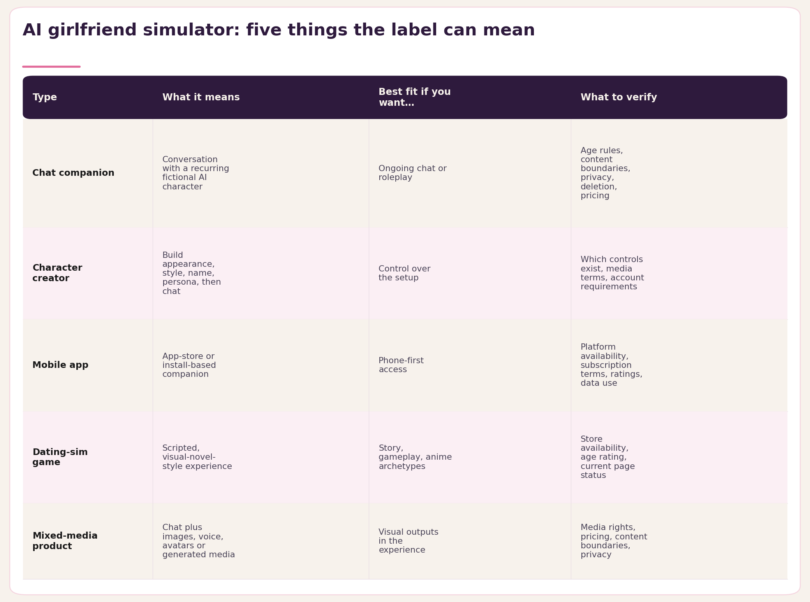
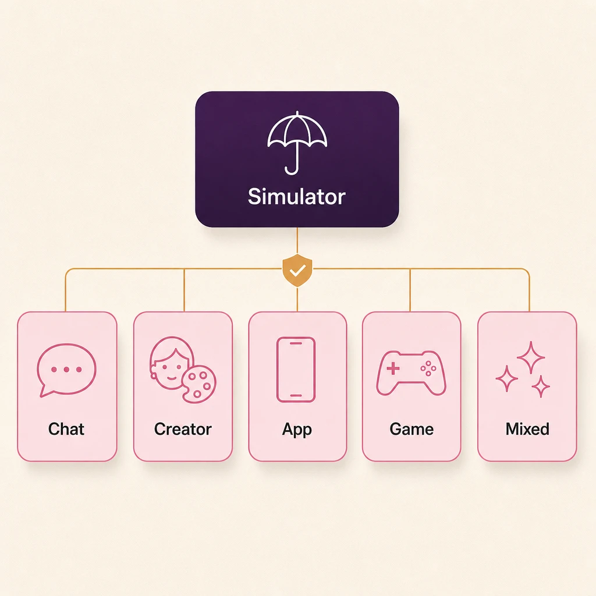
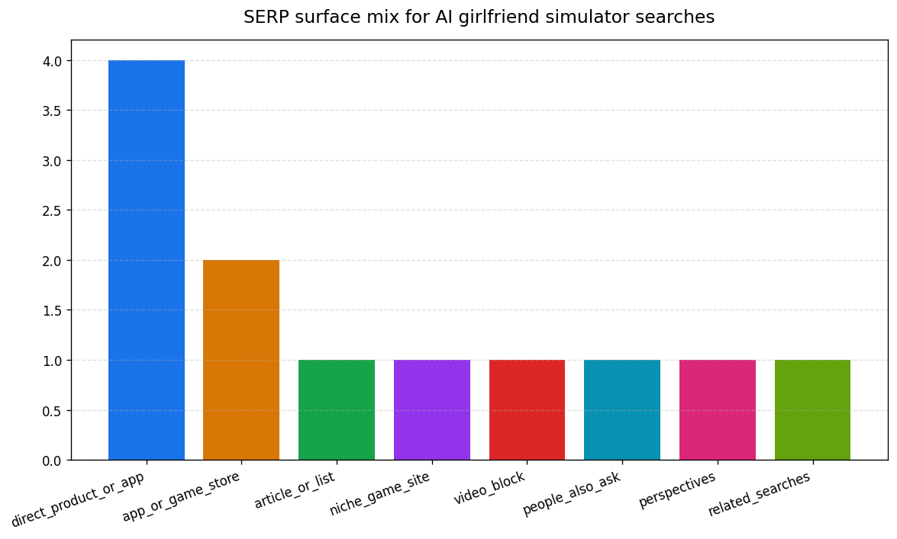
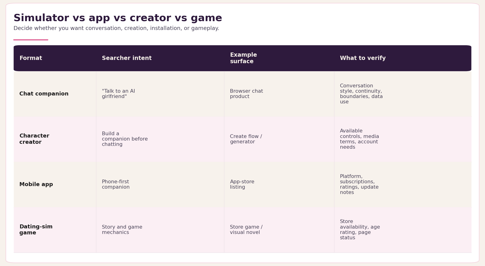
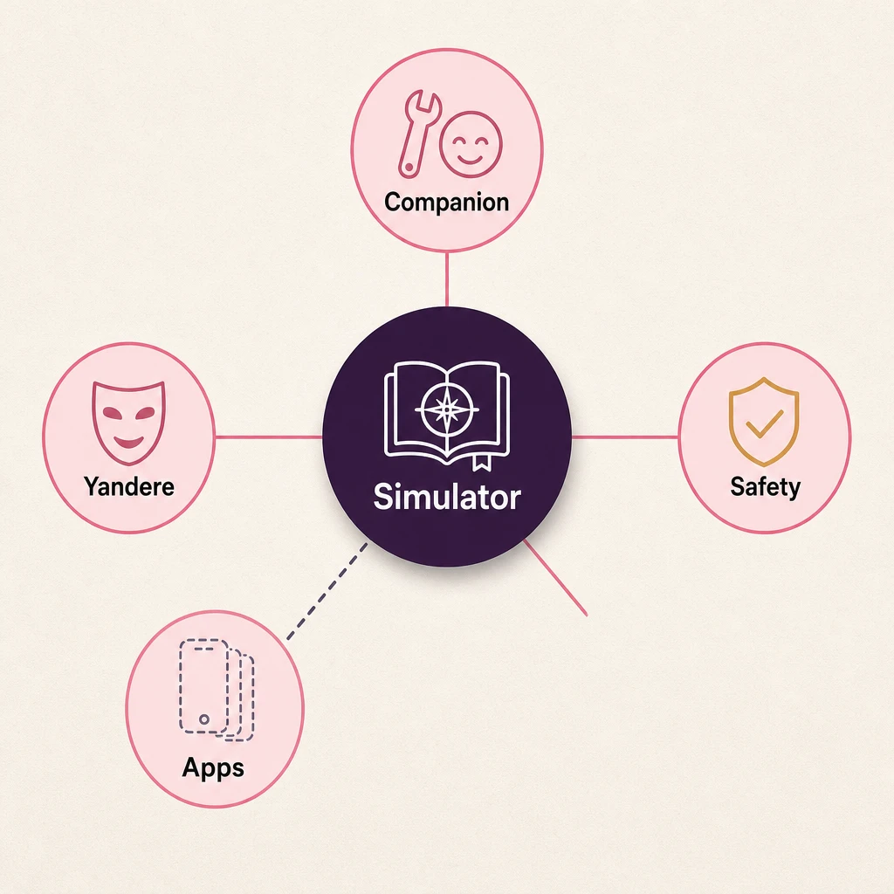
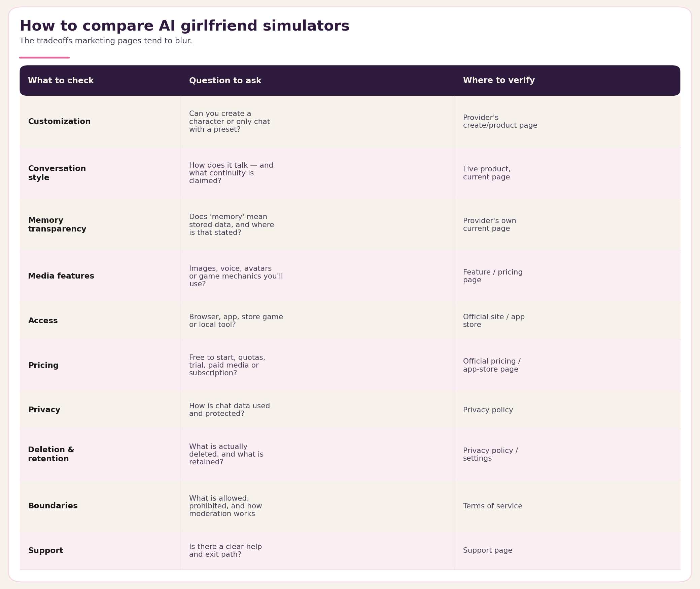
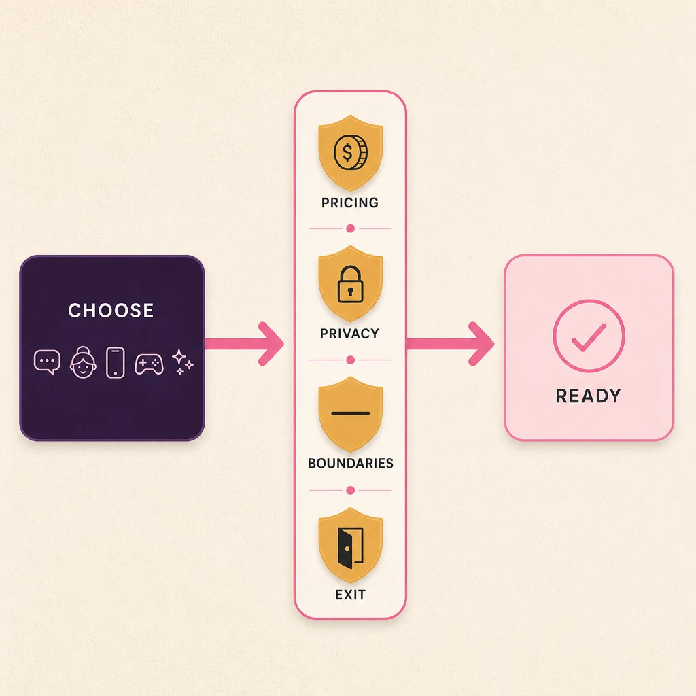
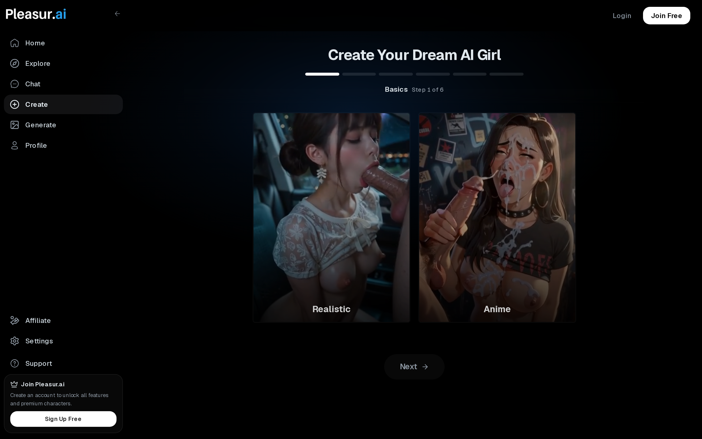
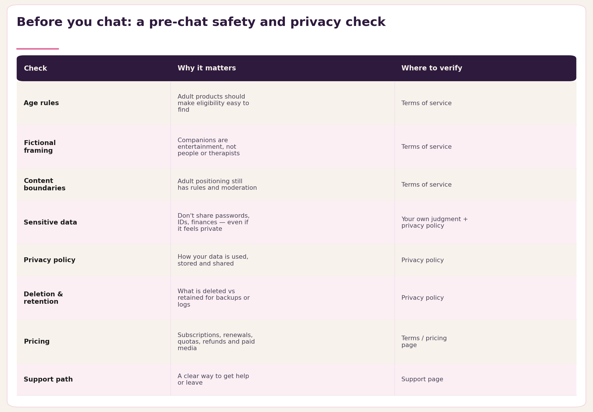

AI Girlfriend Simulator: What It Means and How to Choose
"AI girlfriend simulator" sounds like one clear product category. It is not.
Search for it and you land on a jumble: chat companions, character creators, mobile apps, dating-sim games, yandere roleplay pages, app stores, videos, and comparison directories. Most people typing the phrase already want one specific thing — they just haven't named it yet. That gap is why a generic "best simulator" pick so often sends you somewhere you didn't mean to go.
So start with the format, not the brand. Do you want a recurring chat companion, a character you build from scratch, an app you install, a scripted game, or a mixed-media experience with generated images? Name that first and every other choice gets easier.
This guide covers the definition, the main simulator types, a comparison checklist, the claims worth a second look before you trust them, and a narrow, honest read on where Pleasur.ai actually fits. It keeps the safety and privacy basics in view too, because a companion chat can start to feel personal fast.
Quick Answer: An AI Girlfriend Simulator Can Mean Several Different Things
An AI girlfriend simulator is a digital experience where an adult can chat with, create, customize, or play through a fictional AI companion scenario.

Use the label this way:
-
Chat companion. Usually means conversation with a recurring fictional AI character. It fits you if you want ongoing chat or roleplay. Verify age rules, content boundaries, privacy language, deletion terms, and pricing. Internal next step:
/chatwhen chat is the right format. -
Character creator or generator. Usually means building appearance, style, name, and persona before chatting. It fits you if control over setup matters. Verify which controls exist, what media terms apply, and what requires an account. Internal next step:
/createand how to make an AI girlfriend. -
Mobile app. Usually means an app-store or install-based companion. It fits you if phone-first access matters. Verify platform availability, subscription terms, reviews, age rating, and data use. The app-comparison route is reserved until its live URL issue is fixed.
-
Dating-sim game. Usually means a scripted or semi-interactive visual-novel style experience. It fits you if story, gameplay, or anime archetypes matter more than open-ended chat. Verify store availability, age rating, and current page status.
-
Mixed-media product. Usually means chat plus images, voice, avatars, or generated media. It fits you if the companion experience includes visual outputs. Verify media rights, pricing, content boundaries, and privacy terms. Internal next step:
/generateonly when media generation is the point.
That taxonomy matters because "simulator" alone does not prove a product is realistic, private, free, safe, unrestricted, or right for your use case.
What Is An AI Girlfriend Simulator?
An AI girlfriend simulator is best understood as a fictional companion experience category, not proof that a product is realistic, unrestricted, free, private, or emotionally supportive.

The one-sentence definition is simple: an AI girlfriend simulator is a digital product or game where an adult can chat with, create, customize, or roleplay with a fictional AI companion.
The hard part is that search results use the same phrase for different things. Our May 2026 research snapshot recorded about 3,600 average monthly US searches for "ai girlfriend simulator," and the results themselves spanned product pages, app listings, games, video, People Also Ask, perspectives, and related searches.

That mix tells you what the term does not prove. A simulator page may be a web chat product. It may be a creator flow. It may be a mobile app listing. It may be a game. It may be a directory listing many products you still have to vet.
So treat "simulator" as the starting label, not the final decision. It does not prove that the character understands you, remembers everything, protects your data, offers free access, has no rules, or supports every adult scenario.
The safer reading is narrower: this is a fictional companion category. You still need to compare the format, rules, pricing, privacy, and exit options before you chat, pay, or share anything personal.
Simulator Vs App Vs Creator Vs Game
The fastest way to choose well is to decide whether you want conversation, creation, installation, gameplay, or a niche roleplay archetype.

A chat companion is closest to the plain-language idea of "talking to an AI girlfriend." You are comparing conversation style, continuity, boundaries, and what the provider says about how your chat data may be used.
A character creator starts one step earlier. You may choose a style, name, appearance, personality, and setup before the chat begins. If that is what you mean by simulator, read how to make an AI girlfriend before you compare products.
Pleasur.ai fits only that create-and-chat lane in this article. Pleasur.ai supports AI companion and AI character experiences, and the public product includes create, chat, explore, and image-generation surfaces on the Pleasur.ai homepage. That is a factual placement, not a ranking.
Apps are different. An app-store listing can confirm phone-first access, screenshots, ratings, update notes, and provider-written claims. It does not independently prove safety, privacy, value, or quality for you. The broader AI girlfriend apps support link should stay disabled until the known route issue is resolved.
Games are different again. A dating-sim game can include story structure, visual-novel choices, character tropes, and fixed mechanics. That may be exactly what you want if you search for "ai girlfriend simulator game," but it is not the same job as an open-ended companion chat.

Yandere searches deserve their own boundary. A yandere AI girlfriend simulator usually points to a niche game, anime archetype, or roleplay setup. It should not take over the whole simulator guide.
Once you separate those formats, your decision gets clearer. You are no longer choosing the "best simulator." You are choosing the product type that matches the experience you actually want.
How To Compare AI Girlfriend Simulators
Compare AI girlfriend simulators by the practical tradeoffs marketing pages often blur: customization, conversation style, media features, pricing, boundaries, privacy, and deletion controls.

Start with the experience. Can you create a character, or only chat with a preset one? Can you change appearance, personality, backstory, or conversation style? Does the product include images, voice, avatars, or game mechanics you will actually use?
Then check access. A browser product, mobile app, store game, and local tool can all feel different. They can also have different account rules, payment paths, moderation systems, and device constraints.
Continuity needs careful reading. If a product claims memory, personalization, or long-term context, verify that claim on the provider's own current page. Do not assume the AI remembers everything, understands you, or can replace real-world support for you.
Pricing also needs fresh proof. "Free" can mean free to start, free with quotas, free trial, limited messages, paid images, paid voice, paid models, or subscription renewal. Verify the official pricing or app-store page before you rely on the claim.
The trust checks matter most before you share personal details. Read the age rules, fictional framing, content boundaries, privacy policy, data-use language, retention and deletion terms, pricing terms, and support path before your first chat.
Use the AI companion safety checklist for that work. It is a due-diligence tool, not a promise that any one simulator is safe, private, or right for you.

Pleasur.ai should be evaluated with the same criteria. It can belong in your shortlist if you want a browser-based create-and-chat path. It should not get a softer standard from you because it is the brand publishing this guide.
Where Pleasur.ai Fits
Pleasur.ai can be presented as a factual create-and-chat option for adults, but it should not be described as best, free, safer, more private, unrestricted, or more realistic unless source verification proves those exact claims.

The source-backed fit is narrow. Pleasur.ai supports AI companion and AI character experiences. You can create and chat with AI characters. The public product includes create, chat, explore, and image-generation surfaces on the Pleasur.ai homepage.
For the create flow, the approved current wording is also narrow: the public /create route starts with basics and Realistic/Anime style choices on the Pleasur.ai Create page. That makes it relevant when you want a character-creation path before chat.
Use Pleasur.ai if your simulator intent is closer to "I want to create a companion and chat" than "I want an app-store list" or "I want a dating-sim game." Use /create as the main next step for creation intent, /chat for conversation intent, and /generate only when generated media is part of the job.
![Supported versus needs-source versus prohibited Pleasur.ai claims. Bullets under can say: supports AI companion and AI character experiences, users can create and chat with AI characters, public product includes create chat explore image-generation surfaces. Bullets under needs source: pricing, account requirements, platform availability, media rights, deletion. Bullets under do not say: best, free, safer, private, unrestricted, most realistic, therapy replacement. Clean editorial checklist, no explicit imagery](../images/ai-girlfriend-simulator/image-9-supported-versus-needs-source.png)
Some claims need a current source before publication. Pricing, account requirements, media rights, deletion controls, app availability, and policy specifics should be checked against the live product or legal pages during verification.
Some claims should stay out unless a later source says them exactly. This does not mean Pleasur.ai is best, free, safer, more private, unrestricted, more realistic, or a replacement for every app or game result; it means the product should be evaluated for this create-and-chat use case.
That boundary is useful. It helps you decide whether Pleasur.ai is relevant to your job without turning the article into a sales page or forcing one product to answer every simulator query.
Safety, Privacy, And Boundaries Before You Chat
Before using any AI girlfriend simulator, check the age rules, fictional framing, content boundaries, data-use language, deletion options, pricing terms, and support path.

Start with age rules. If a product is adult-oriented, the eligibility language should be easy for you to find. Pleasur.ai's Terms of Service state that the service is limited to users who are at least 18 or the legal age of majority in their jurisdiction. If a product serves younger users, you need to understand what restrictions and protections apply.
Then read the fictional framing. AI companions can feel intimate, but they are not people, therapists, crisis services, legal advisers, or guaranteed emotional support for you; Pleasur.ai's Terms of Service frame its AI companions as fictional and the service as entertainment, not therapy or professional support. A credible provider should avoid pretending otherwise.
Content boundaries deserve the same attention. Look for what is allowed, what is prohibited, how moderation works, and what happens if your content is flagged. Adult positioning does not mean no rules; Pleasur.ai's Terms of Service include moderation and prohibited-content enforcement language.
Do not share sensitive information just because a chat feels private. Avoid passwords, addresses, financial details, government IDs, workplace secrets, medical details, and anything you would not want stored, reviewed, or mishandled; Pleasur.ai's Terms of Service also warn users not to disclose sensitive personal information through the service.
Deletion and retention language should be checked before you need it. A visible delete action may not answer every question you have about backups, moderation records, analytics, legal retention, or service logs; Pleasur.ai's Privacy Policy describes retention windows, deletion requests, and cases where some data may still be retained.
Pricing is part of safety in practice. Confirm subscriptions, renewals, quotas, cancellation, refunds, and paid media features before you commit. A simulator can look free on one page and still include paid limits elsewhere in your actual workflow; Pleasur.ai's Terms of Service describe paid services, recurring subscriptions, cancellation, and refund limits.
The AI companion safety checklist is the stronger next step before you create an account, pay, or share personal details. Use it for every simulator type, including Pleasur.ai and competitors.
FAQ
What is an AI girlfriend simulator?
An AI girlfriend simulator is a fictional AI companion experience where an adult can chat with, create, customize, or play through a companion scenario. The term can describe a chat product, creator, mobile app, game, or mixed-media product. It does not prove realism, privacy, price, platform access, or lack of rules.
Is an AI girlfriend simulator the same as an AI girlfriend app?
No. An app is one format inside the broader simulator category. A simulator can also be a browser chat product, character creator, dating-sim game, yandere niche page, or mixed-media companion surface. Check the format before you compare features or pricing.
Can I create a custom AI girlfriend?
Yes, some products support character creation or generator flows. For Pleasur.ai, the verified draft-stage language is limited: the public /create route starts with basics and Realistic/Anime style choices on the Pleasur.ai Create page. For the broader workflow, read how to make an AI girlfriend.
Is there a free AI girlfriend simulator?
Sometimes, but free access changes often. A provider may offer free signup, a trial, limited messages, paid images, paid voice, quotas, or subscription renewal terms. Verify current pricing and limits on each official pricing page or app-store listing before you sign up.
What is a yandere AI girlfriend simulator?
A yandere AI girlfriend simulator usually means a niche game, anime archetype, or roleplay variant built around the yandere trope. It is not the same as every AI companion chat product. For that specific intent, use the yandere AI girlfriend simulator guide.
What should I check before using one?
Check age rules, fictional framing, content boundaries, privacy policy, data retention and deletion language, pricing terms, and support or exit paths. The AI companion safety checklist gives you a practical way to review those points before you chat.
Bottom Line
"AI girlfriend simulator" is a starting label, not enough information to choose a product.
Pick the format first: chat, creator, app, game, niche roleplay, or mixed media. Then compare the claims that matter before you create an account, pay, or share personal details.
If you want a browser-based create-and-chat path, Pleasur.ai is one option to evaluate through /create and /chat. If you want an app directory or dating-sim game, choose the support path that matches that job instead.
Suggested title: AI Girlfriend Simulator: What It Means and How to Choose
Suggested meta description: Learn what an AI girlfriend simulator can mean, how chat apps, creators, games, and mixed-media products differ, and what to verify before you choose.
Suggested slug: /blog/ai-girlfriend-simulator
Schema candidates: Article or BlogPosting, BreadcrumbList, and FAQPage if the visible FAQ remains in the published version.